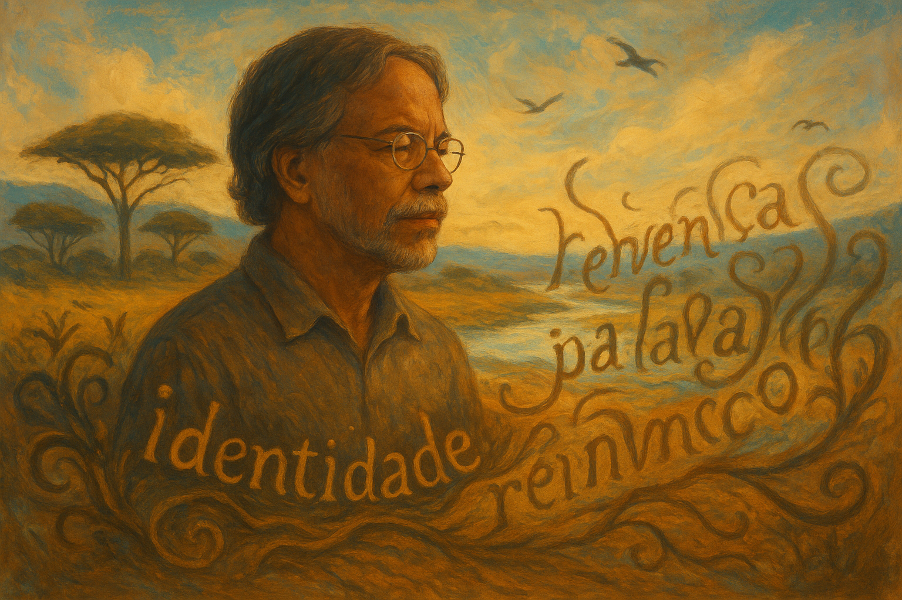
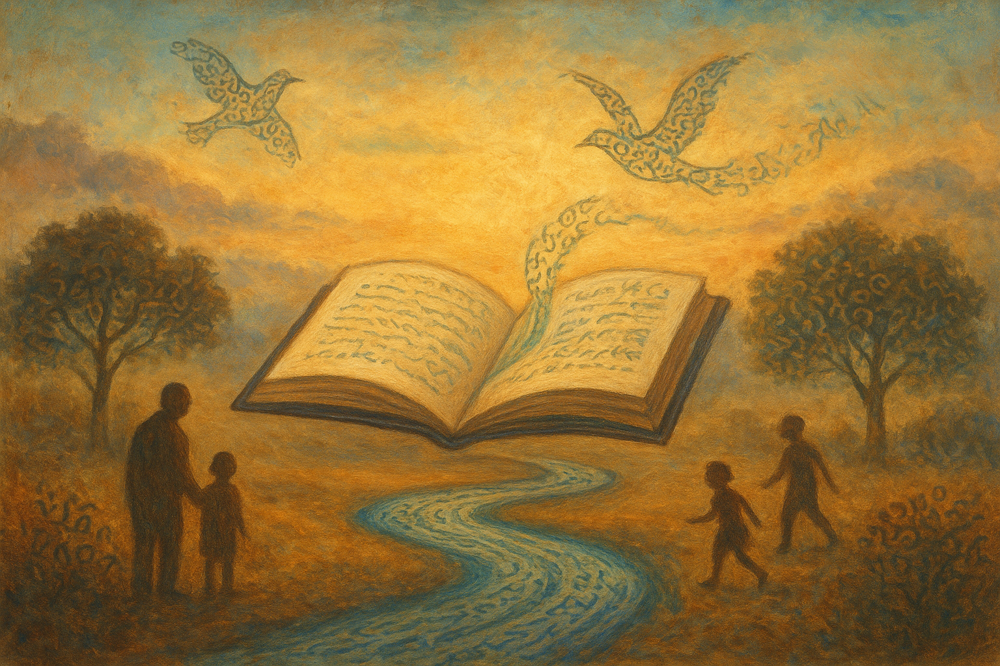

Mia Couto: vida, obras, estilo literário e importância na literatura africana de língua portuguesa
Mia Couto é um dos escritores africanos mais importantes da atualidade e uma referência fundamental da literatura africana de língua portuguesa. Suas obras unem poesia, oralidade, memória coletiva e reinvenção da língua portuguesa para narrar a história, os conflitos e a identidade de Moçambique.
Com uma escrita singular e inovadora, Mia Couto ultrapassou fronteiras nacionais, sendo traduzido para dezenas de idiomas e estudado em universidades de todo o mundo.
Quem é Mia Couto?
Mia Couto nasceu em 1955, na cidade da Beira, em Moçambique. Filho de imigrantes portugueses, cresceu em um país ainda sob domínio colonial, vivenciando desde cedo as tensões culturais, sociais e políticas que marcaram a história moçambicana no século XX. Esse contexto de fronteira entre culturas europeias e africanas teve papel decisivo na formação de sua visão de mundo e de sua sensibilidade literária.
Durante a juventude, Mia Couto acompanhou de perto o processo de luta pela independência de Moçambique, conquistada em 1975. Após esse período, o país enfrentou uma longa e violenta guerra civil, cujas consequências humanas, sociais e simbólicas atravessam grande parte de sua obra. A experiência desse tempo histórico aparece em seus livros não apenas como registro de conflitos, mas como reflexão profunda sobre trauma, memória, perda e reconstrução.
Antes de se consolidar como escritor, Mia Couto atuou como jornalista, participando ativamente da vida cultural e política do país recém-independente. Essa vivência contribuiu para seu olhar crítico sobre a realidade social e para o desenvolvimento de uma escrita atenta às vozes marginalizadas e às histórias silenciadas.
Além de escritor, Mia Couto é biólogo, formação que influencia diretamente sua obra literária. O contato constante com a natureza, os ecossistemas e os ciclos da vida reflete-se em sua escrita por meio de metáforas orgânicas, imagens ligadas à terra, aos rios, aos animais e ao tempo natural. Em seus textos, o mundo humano e o mundo natural aparecem profundamente interligados.
Ao longo de sua trajetória, Mia Couto construiu uma carreira literária sólida e internacionalmente reconhecida, tornando-se uma das vozes mais importantes da literatura africana de língua portuguesa. Sua biografia, marcada pelo diálogo entre ciência, literatura, história e cultura, ajuda a compreender a originalidade de sua escrita e o caráter profundamente humano de suas narrativas.
Contexto histórico e cultural de sua obra
A literatura de Mia Couto nasce de um contexto histórico profundamente marcado por rupturas, conflitos e processos de reconstrução. Moçambique viveu longos séculos de colonização portuguesa, seguidos por uma intensa luta de libertação nacional e, posteriormente, por uma devastadora guerra civil. Esse cenário histórico influencia diretamente os temas, os personagens e a linguagem presentes em sua obra.
Nesse contexto, a escrita de Mia Couto surge como um espaço de diálogo entre diferentes tempos, culturas e formas de conhecimento. Sua literatura não se limita a narrar fatos históricos, mas busca compreender como esses acontecimentos moldam a memória coletiva, as identidades individuais e as relações sociais.
A produção literária do autor resulta do encontro entre múltiplas experiências históricas e culturais, que se entrelaçam de forma simbólica e poética:
- A tradição oral africana, presente nos mitos, nas lendas, nos provérbios e na forma circular de contar histórias, que valoriza a palavra falada e a sabedoria dos mais velhos;
- A herança da língua portuguesa, apropriada e transformada pelo autor, que rompe com padrões normativos para criar uma linguagem híbrida, marcada por neologismos e estruturas próprias;
- A experiência do colonialismo e do pós-independência, refletida na crítica às relações de poder, às marcas da dominação estrangeira e às contradições do processo de construção do Estado moçambicano;
- A reflexão filosófica sobre identidade, memória e pertencimento, que atravessa suas narrativas ao questionar quem são os sujeitos africanos após a colonização e como o passado continua presente no cotidiano.
Os conflitos armados, especialmente a guerra civil, aparecem em suas obras não apenas como eventos históricos, mas como experiências humanas traumáticas que afetam profundamente o imaginário, a linguagem e os vínculos sociais. A guerra, em Mia Couto, é muitas vezes representada de forma simbólica, revelando perdas, silêncios e feridas invisíveis.
Ao mesmo tempo, seus textos apontam para a reconstrução social e espiritual do país. A literatura torna-se um espaço de resistência, cura e reinvenção, no qual a palavra recupera sentidos, reconstrói memórias e contribui para a formação de uma identidade nacional plural, marcada pela diversidade cultural e pela convivência entre tradição e modernidade.
Características do estilo literário de Mia Couto
O estilo de Mia Couto é facilmente reconhecível e apresenta características marcantes:
- Reinvenção da língua portuguesa, com criação de neologismos;
- Forte presença da oralidade africana;
- Uso intenso de metáforas poéticas e simbólicas;
- Aproximação com o realismo mágico africano;
- Fusão entre sonho, mito e realidade;
- Narrativas reflexivas e de ritmo contemplativo.
Em sua escrita, o português deixa de ser apenas uma língua colonial e passa a ser reapropriado, transformando-se em instrumento de expressão cultural africana.
Principais obras de Mia Couto
Terra Sonâmbula (1992)
Considerado um dos romances africanos mais importantes do século XX, Terra Sonâmbula tem como pano de fundo a guerra civil moçambicana. A narrativa acompanha a jornada de Tuahir, um velho, e Muidinga, um menino órfão, que vagam por uma estrada devastada pelo conflito.
Durante a caminhada, o menino encontra cadernos que contam a história de Kindzu, um jovem que sonha com um país melhor. A leitura desses relatos se mistura à trajetória dos protagonistas, criando um jogo entre realidade e imaginação. O romance aborda temas como memória, perda, esperança e sobrevivência, utilizando uma linguagem poética que transforma a guerra em espaço de reflexão humana e simbólica.
O Último Voo do Flamingo (2000)
Neste romance alegórico, Mia Couto constrói uma narrativa marcada pelo humor e pela ironia para criticar o cenário político e social do Moçambique pós-guerra. A história se passa em uma pequena vila onde soldados estrangeiros, enviados em missões de paz, começam a morrer de forma inexplicável, explodindo sem deixar vestígios.
A partir desse fato insólito, o autor questiona a presença das forças internacionais, a burocracia, o neocolonialismo e os interesses externos no continente africano. O flamingo, símbolo recorrente na obra, representa esperança, liberdade e a possibilidade de reconstrução, em contraste com o absurdo da realidade apresentada.
Um Rio Chamado Tempo, uma Casa Chamada Terra (2002)
Este romance acompanha o retorno de Mariano à ilha onde nasceu, após a morte do avô. Ao revisitar a antiga casa da família, o protagonista se depara com segredos, silêncios e conflitos que atravessam gerações.
A obra explora profundamente a relação entre passado e presente, vivos e mortos, tradição e mudança. O rio e a casa funcionam como metáforas do tempo, da memória e da identidade. Com uma linguagem altamente poética, Mia Couto reflete sobre pertencimento, ancestralidade e a construção do sujeito em diálogo com a história coletiva.
A Confissão da Leoa (2012)
Inspirado em fatos reais, este romance se passa em uma aldeia moçambicana assolada por ataques de leões. A narrativa é construída a partir de dois pontos de vista: o de um caçador contratado para matar os animais e o de uma mulher da aldeia, que vive sob constante opressão.
Mais do que um relato sobre animais selvagens, a obra discute a violência estrutural, o silenciamento feminino e os conflitos entre tradição e modernidade. Os leões assumem um forte valor simbólico, representando medos, desejos reprimidos e as feridas sociais de uma comunidade marcada pelo patriarcado.
Contos e poesias
Além dos romances, Mia Couto se destaca amplamente como contista e poeta. Seus contos são conhecidos pela brevidade, pela força simbólica e pela capacidade de condensar reflexões profundas em poucas páginas.
Nas poesias, o autor explora a musicalidade da língua portuguesa, o diálogo com a natureza e a oralidade africana. Tanto nos contos quanto nos poemas, aparecem temas recorrentes como memória, identidade, morte, infância e reinvenção da palavra, confirmando Mia Couto como um verdadeiro artesão da linguagem literária.
Temas recorrentes na obra de Mia Couto
- Relação entre ser humano e natureza;
- Guerra, trauma e reconstrução social;
- Identidade cultural africana;
- Memória, ancestralidade e tradição;
- O poder da palavra e da narrativa.
Importância de Mia Couto para a literatura africana
Mia Couto tem papel central na consolidação da literatura africana de língua portuguesa, ao:
- Valorizar culturas e saberes tradicionais africanos;
- Romper com modelos literários eurocêntricos;
- Dar voz a personagens marginalizados;
- Transformar a língua portuguesa em espaço de resistência cultural.
Prêmios e reconhecimento
Ao longo de sua carreira, Mia Couto recebeu importantes prêmios literários:
- Prêmio Camões;
- Prêmio Neustadt de Literatura;
- Reconhecimento internacional em diversos países lusófonos.
Mia Couto no contexto escolar e acadêmico
As obras de Mia Couto são amplamente utilizadas em contextos educacionais:
- No ensino médio, em estudos sobre literatura africana;
- Em universidades, em cursos de literatura comparada;
- Em vestibulares e exames de leitura obrigatória.
Por que ler Mia Couto?
- Conhecer uma nova forma de usar a língua portuguesa;
- Compreender a história e a cultura de Moçambique;
- Refletir sobre identidade, memória e pertencimento;
- Ampliar o repertório literário e cultural.
Conclusão
Mia Couto é mais do que um escritor moçambicano: é um artesão da palavra e um dos maiores representantes da literatura africana de língua portuguesa. Sua obra convida o leitor a ouvir vozes ancestrais, repensar a linguagem e enxergar o mundo por novas perspectivas.
Este conteúdo inaugura, de forma consistente, uma série dedicada aos escritores africanos de língua portuguesa, valorizando vozes essenciais da literatura mundial.